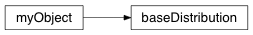

baseDistribution¶
-
class
geobipy.src.classes.statistics.baseDistribution.baseDistribution(prng=None)¶ Define an abstract base distribution class
-
deepcopy()¶ Place holder for children
-
getBins(size=100)¶ Place Holder for children
-
-
geobipy.src.classes.statistics.baseDistribution.rng()¶ random_sample(size=None)
Return random floats in the half-open interval [0.0, 1.0).
Results are from the “continuous uniform” distribution over the stated interval. To sample \(Unif[a, b), b > a\) multiply the output of random_sample by (b-a) and add a:
(b - a) * random_sample() + a
Parameters: size (int or tuple of ints, optional) – Output shape. If the given shape is, e.g., (m, n, k), thenm * n * ksamples are drawn. Default is None, in which case a single value is returned.Returns: out – Array of random floats of shape size (unless size=None, in which case a single float is returned).Return type: float or ndarray of floats Examples
>>> np.random.random_sample() 0.47108547995356098 >>> type(np.random.random_sample()) <type 'float'> >>> np.random.random_sample((5,)) array([ 0.30220482, 0.86820401, 0.1654503 , 0.11659149, 0.54323428])
Three-by-two array of random numbers from [-5, 0):
>>> 5 * np.random.random_sample((3, 2)) - 5 array([[-3.99149989, -0.52338984], [-2.99091858, -0.79479508], [-1.23204345, -1.75224494]])